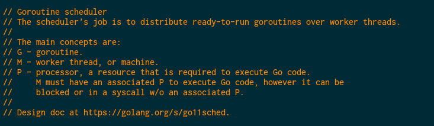

Inside GO Concurrency
Boyan Bonev - b.bonev@redbuffstudio.com
This is a true story. Except when it's not.
define:concurrent
concurrent (dictionary) [\kən-ˈkər-ənt] adjective.
- operating or occurring at the same time
- acting in conjunction
concurrent process (software) [\kən-ˈkər-ənt ˈyü-nəts\] 😠
noun.
- Computational units with overlapping lifetimes, designed to be executed (mostly) out of order, known to provoke night sweats.
- Oh yeah, they also need to share facts about the world... 😱
Once upon a concurrent time...


How we do concurrency?
- Communicate by sharing - Manual race conditions protection, semaphors, mutexes => thread safety guaranteed by the developer. (C++, Java etc.)
- Actor Model - Actors are encapuslating state, have an identity and communicate via message passing. Guaranteed independence outside of inbox/delivery. (Erlang, Elixir, Scala via Acca(kind of))
- CSP - Anonymous units(processes), channels are the structure used for information sharing. (Go, Clojure via core.async)
So, I heard we'll talk about Go?
- Golang Runtime - It's in Go.
- The Scheduler - Make it all tick.
- Goroutines - Anonymous units of work.
- Channels - Data structures used for unidirectional communnication.
- "sync", "unsafe".
Scheduler
- Implementation @ src/runtime/proc.go

References:
"Analysis of the Go runtime scheduler" - Deshpande, Sponsler, Weiss
"Scheduling Multithreaded Computations by Work Stealing" - Blumofe, Leiserson
Goroutines
- Abstract structures representing computation units.
- Executed in user space with reduced overhead - stack size control, faster context switching. Green threads.
- 1 : ∞ mapping to OS threads (unless LockOsThread)
- Bottlenecks - I/O, syscalls.
Channels
- Implementation @ src/runtime/chan.go
- Message queues?
- Blocking only on goroutine level.
- Mutex controlled on send/rec/close.
Do you even know?
- Goroutine current default stack size?
- What is the Go maximum stack size?
- What happens if you send/receive to/from a nil channel?
- What happens if you send/receive to/from a closed channel?
- And if you put onto a full buffered channel?
- Maps in Go are not ...<insert here>
- Is Go concurrency performance good enough for you?